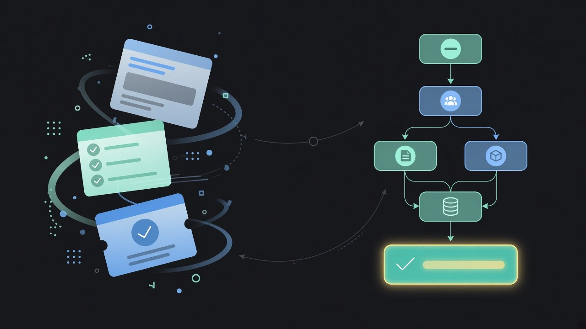
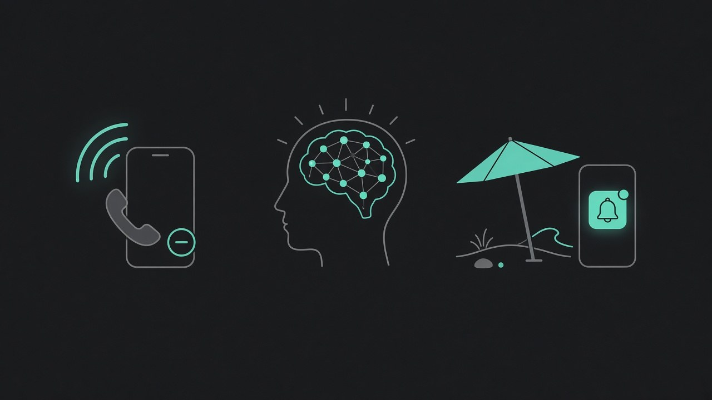
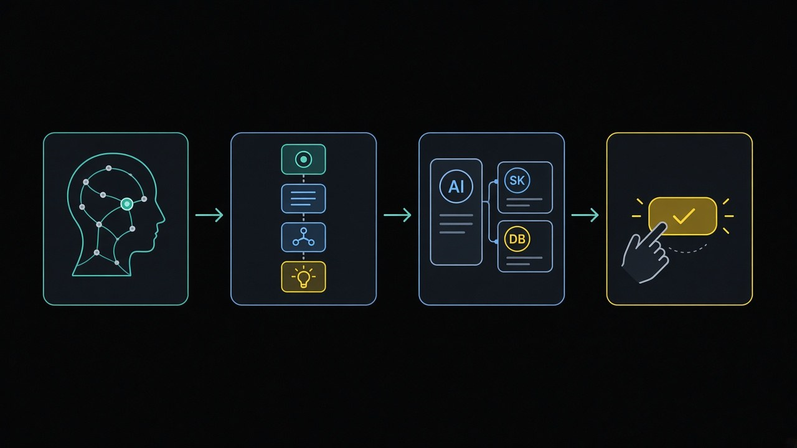
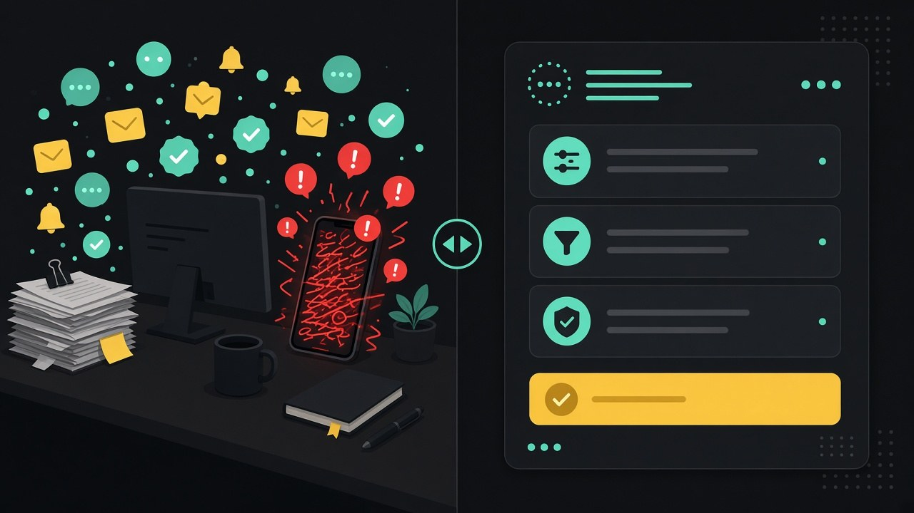

Przed
Wszystko przez Ciebie
Każdy wyjątek, wycena i „czy możemy tak?” ląduje na telefonie. Zespół działa, gdy Ty jesteś dostępny.
Bez wielomiesięcznej dokumentacji: wyciągamy workflow, decyzje i wyjątki z Twojej głowy. Bot dostaje reguły; Ty zachowujesz listę decyzji człowieka.

Problem
Typowy właściciel MŚP trzyma procesy w głowie. To działa — aż przestaje.

Zespół czeka na Twoje „jak to u nas robimy”. Telefon nie milknie, a sprawy się piętrzą.
Nie ma mapy procesu, tylko Twoja intuicja. Nowi ludzie uczą się przez Ciebie — albo wcale.
Urlop bez odłączenia. Wyjątki, ceny i decyzje i tak wracają na Twój telefon.
Czym jest model mentalny
Nie piszemy encyklopedii. Wyciągamy to, co już masz w głowie: kroki, kto decyduje, kiedy bot pyta i co jest nieodwracalne.

01
Procesy i wyjątki u właściciela
02
Kroki, reguły, lista decyzji
03
Rutyna według modelu; eskalacja przy ryzyku
04
Cena, wyjątek, wypłata — Twoje OK
Co się dzieje po kolei — bez zbędnej dokumentacji, tylko to, co bot ma wykonać.
Punkty, w których człowiek zatwierdza albo bot eskaluje zamiast zgadywać.
Wysyłki, płatności, obietnice wobec klienta — zawsze po stronie człowieka.
Przed / po
Nie branże — konkret: firma stoi na Tobie, a Ty chcesz oddać rutynę bez oddawania kontroli.

Przed
Każdy wyjątek, wycena i „czy możemy tak?” ląduje na telefonie. Zespół działa, gdy Ty jesteś dostępny.
Po
Bot prowadzi powtarzalne kroki. Człowiek zatwierdza cenę, wyjątek albo wypłatę — zgodnie z listą decyzji z modelu.
Wakacje bez telefonu to skutek modelu — nie obietnica „AI zamiast Ciebie”.
Przebieg
Typowy start jednego workflow: około 3 dni — zgodnie z ofertą getStanley. Zaczynamy od modelu mentalnego jednego procesu.
Krótka rozmowa: który proces wyciągnąć z głowy jako pierwszy.
Kroki, reguły, wyjątki i lista decyzji człowieka.
Role, reguły i eskalacje pod ten workflow.
Dopasowanie do Twoich aplikacji i standardu pracy.
Start + check-iny jakości. Model iterujemy, gdy pojawią się luki.
Human in the Loop
Model mentalny nie jest kompletny, dopóki nie ma jasnej granicy: co bot robi sam, a co zawsze wymaga Twojego OK.
Żadnych przelewów ani zobowiązań finansowych bez Twojej zgody.
Komunikaty do klienta i zobowiązania — po zatwierdzeniu.
Gdy reguła nie pasuje, bot eskaluje zamiast improwizować.
Dopasowanie
Pilotaż
Uruchamiamy pilotaż dla pierwszych 10 firm: wdrożenie jednego workflow w około 3 dni, na warunkach pilotażowych. Bez obietnic ROI — uczciwy test na jednym procesie. Pilotaż zaczyna się od modelu mentalnego tego procesu. Wejście: wypełnij formularz.
Zgłoś proces do modeluFAQ
Nie. Model budujemy z rozmowy i tego, co masz w głowie. Dokumentacja nie jest warunkiem startu.
Krótki brief i sesje mapowania jednego procesu — nie wielomiesięczny projekt. Tempo typowego startu jednego workflow: około 3 dni po ustaleniu zakresu.
Nie. Płatności, wysyłki, obietnice wobec klienta i wyjątki wymagają zatwierdzenia człowieka. Bez HITL nie uruchamiamy modelu.
Bot eskaluje przy niepewności. Luki w modelu domykamy w kolejnych check-inach — iteracja jest częścią procesu, nie awarią.
Kontakt
Wypełnij formularz. Zgłoszenie trafia do pipeline sprzedaży getStanley. Pierwszą odpowiedź (do ok. 1 godziny, także poza 8–17) przygotowuje nasz bot sprzedaży: potwierdza zgłoszenie i proponuje termin. Rozmowę prowadzi człowiek. Zespół getStanley pracuje pn–pt w godz. 8–17.
Pełna oferta wdrożenia: getStanley /pl/